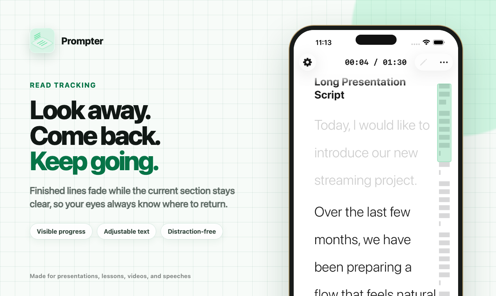

01 · Read tracking
Always know where to return.
Finished lines fade while the current section stays clear. Glance at the audience, a camera, or your notes—then come back without searching.
- Visible reading progress
- Adjustable font size and spacing
- Clean, distraction-free presentation view